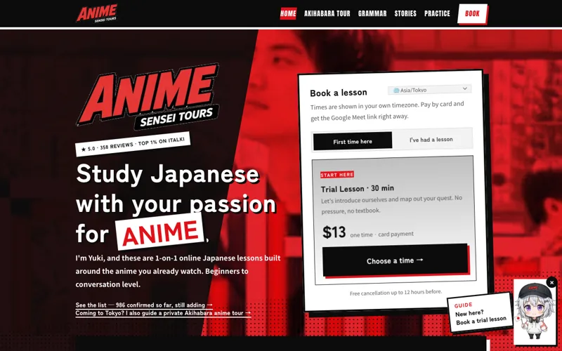
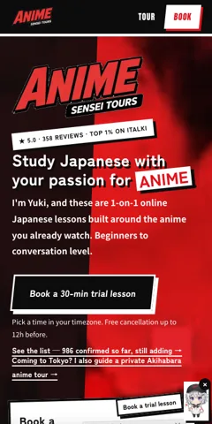
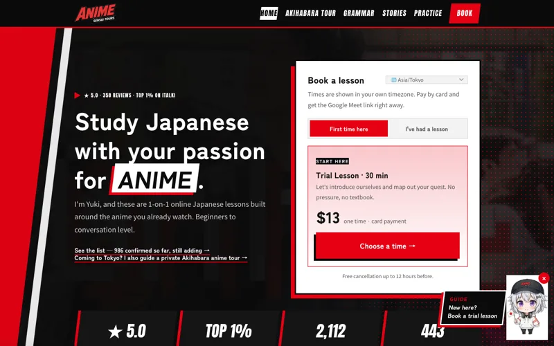
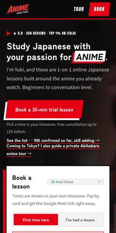
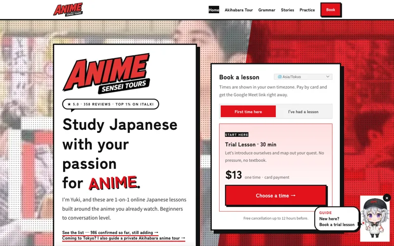
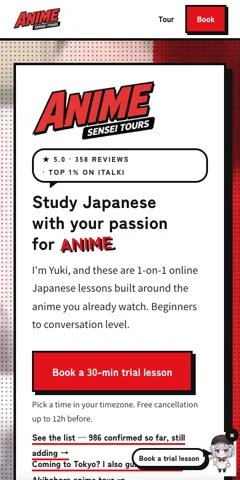
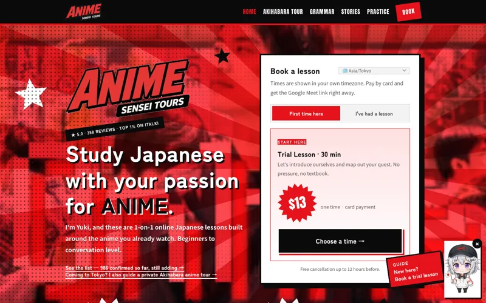
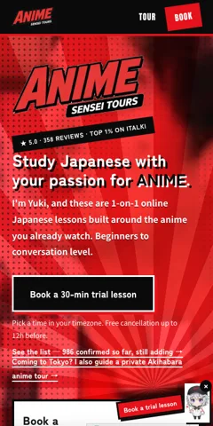
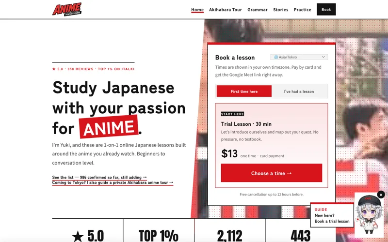
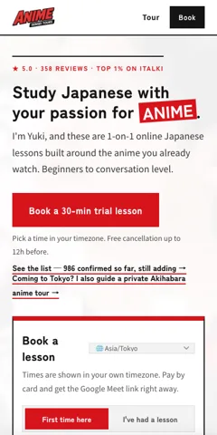

g1赤基調・斜め全開
この案を開く →赤地に写真を赤で焼き込み、6度の斜め切り込みと白黒の帯見出しで押し切る案。5案でいちばん攻撃的です。
ナビゲーター：あり 右下にSD版（縦78%版）。白い四角の吹き出しを6度傾けて、黒の影。


g2黒基調・メニュー画面風
この案を開く →黒地に見出しを傾いたメニュー項目として並べ、赤い三角カーソルと白の反転で「選択中」を見せる案。
ナビゲーター：あり 右下にSD版（縦78%版）。黒地に白枠の吹き出し、赤の影。


g3白＋ハーフトーン漫画風
この案を開く →白地に網点を敷き、太枠のコマ割りと吹き出しでレビューやCTAを組んだ、読みやすさ寄りの案。
ナビゲーター：あり 右下にSD版（縦78%版）。白い角丸の吹き出しに黒のしっぽ。


g4バーストと星のポップ全開
この案を開く →放射線の背景に星型バーストを散らし、実績の数字・料金・レベル表示をバーストの中に入れた案。
ナビゲーター：あり 右下にSD版（縦78%版）。赤い吹き出しを8度傾けて。


g5斜め帯と引用の編集系
この案を開く →見出しを画面端から伸びる赤い斜め帯に載せ、レビューは誌面の引用として組んだ落ち着いた案。
ナビゲーター：あり 右下にSD版（縦78%版）。白地に赤の上罫だけ。